第 6 章 深度学习入门（下）：注意力、图网络、少样本与其他模块¶
本章目标
- 一步步理解注意力机制与 Transformer，能手算 3 个 token 的自注意力；
- 理解图神经网络的“消息传递”，能手算 3 节点图上的一层图卷积，了解 GAT；
- 掌握少样本学习的 N-way K-shot 范式，能手算 3-way 1-shot 原型网络的分类概率，了解关系网络与 MAML；
- 了解对比学习（能算一次 NT-Xent 损失）、复值网络（复数乘法 = 旋转缩放）、空间变换网络（STN）以及常用评价指标。
基础回链
本章用到的基础： 神经元、softmax、交叉熵、梯度下降（→ 第 5.1、5.2 节）；卷积与 CNN（→ 第 5.3、5.4 节）；复数乘法（→ 第 0.1 节）；ISAR 散射中心（→ 第 2.7 节）。
6.1 注意力机制与 Transformer¶
6.1.1 通道 / 空间注意力：给特征“打权重”¶
直觉
类比：用荧光笔划重点。 读一页书时，你会把重要的句子划亮、其余略过。注意力模块就是网络的“荧光笔”：先算出一张 0–1 之间的权重图，再与特征相乘——重要的地方放大，不重要的抑制。
通道/空间注意力：给特征图乘一个 0–1 之间的权重图。例如 DB-SSIT SFEB 的空间注意力：沿通道取平均与最大值 → 卷积 → sigmoid（输出在 0–1 之间，→ 第 5.1 节）→ 与特征逐元素相乘（原文式 (20)–(22)）。
6.1.2 自注意力：每个 token 向所有 token “提问”¶
直觉
类比：图书馆查资料。 你带着一个问题（Query，查询）走进图书馆，每本书的书脊上有一个标签（Key，键），书里是内容（Value，值）。你把问题和每个标签比一比，越匹配的书读得越认真（权重越大），最后把读到的内容按权重汇总成答案。自注意力里，每个图像块（token）同时扮演“提问者”和“被查的书”。
机理。 把图像切成 \(N\) 个小块（patch / token），每块展平并线性映射成 \(d\) 维向量，排成矩阵 \(X\in\mathbb R^{N\times d}\)（每行一个 token）。三个可学习矩阵把它映射成查询、键、值：
然后分三步：
- 打分：\(S = QK^T/\sqrt d\)，\(S_{ij}\) 是第 \(i\) 个查询与第 \(j\) 个键的点积相似度；除以 \(\sqrt d\) 是为了防止 \(d\) 大时点积过大、softmax 过于尖锐；
- 归一化：对 \(S\) 的每一行做 softmax，得到注意力权重 \(A\)，每行和为 1；
- 加权汇总：输出 \(= AV\)，第 \(i\) 行是所有 value 按权重 \(A_{i1},\dots,A_{iN}\) 的加权平均。
合起来：
关键公式
\(Q,K,V\in\mathbb R^{N\times d}\)：查询、键、值；\(d\)：特征维数；softmax 按行进行。
例题
例题 6.1（3 个 token 的自注意力）。 3 个 token：\(\mathbf x_1=[1,0]\)，\(\mathbf x_2=[0,1]\)，\(\mathbf x_3=[1,1]\)，\(d=2\)；为便于手算取 \(W_Q=W_K=W_V=I\)，于是 \(Q=K=V=X\)。
第 1 步：打分。 \(QK^T\) 的第 \((i,j)\) 元是 \(\mathbf x_i\cdot\mathbf x_j\)，例如 \(\mathbf x_1\cdot\mathbf x_3 = 1\)，\(\mathbf x_3\cdot\mathbf x_3 = 2\)。再除以 \(\sqrt2 = 1.414\)：
第 2 步：按行 softmax。 第 1 行：\(e^{0.7071}=2.028\)，\(e^{0}=1\)，总和 \(5.056\)，得 \([0.4011, 0.1978, 0.4011]\)。同理：
第 3 步：加权汇总。 第 1 行输出 \(= 0.4011[1,0] + 0.1978[0,1] + 0.4011[1,1] = [0.8022,\ 0.5989]\)。同理：
解读：token 1 原本是 \([1,0]\)，现在“吸收”了与它相似的 token 3 的信息，第二维从 0 变成 0.5989。每个 token 的输出都融合了全图的信息。
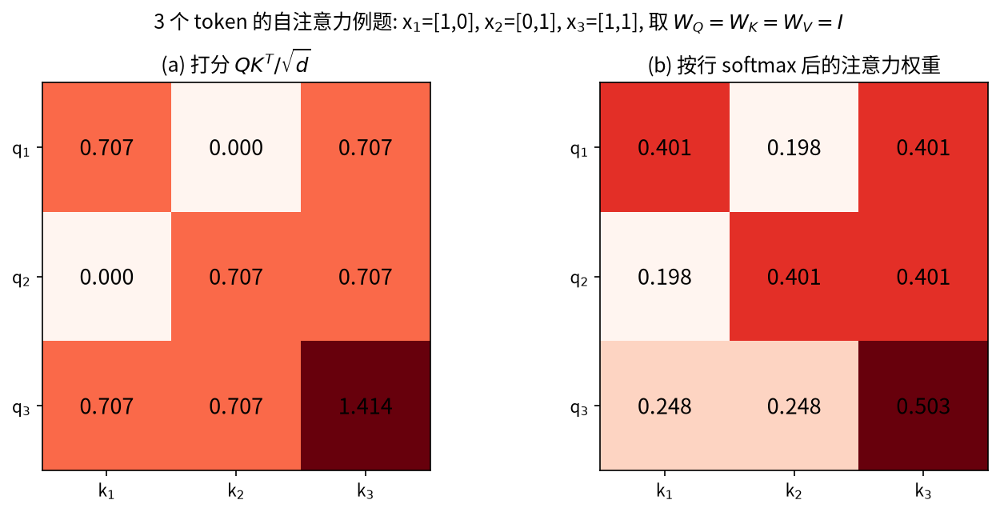
多头注意力与 Transformer。 用 \(h\) 组不同的 \((W_Q, W_K, W_V)\) 并行做 \(h\) 次注意力（“多头”，每个头关注不同类型的关系），把结果拼接后再线性映射。Transformer = 多头自注意力 + 前馈网络（FFN，即每个 token 各自过一个两层 MLP）+ 残差连接 + 层归一化（LayerNorm）；ViT 把它用于图像。由于自注意力本身不区分 token 的顺序，还要给每个 token 加上位置编码，告诉网络“这一块在图像的哪里”。
计算量。 打分矩阵是 \(N\times N\) 的，所以代价与 token 数的平方成正比：8×8 = 64 个 patch 就要算 \(64^2 = 4096\) 个分数。DB-SSIT 因此用“对 K 做平均池化、减少键的个数”的高效多头自注意力（E-MHSA）降计算量。
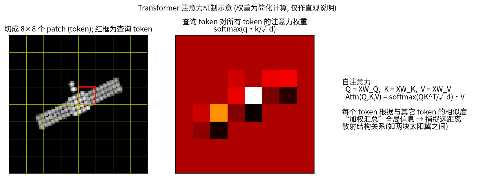
易错点
易错点。（1）softmax 是按行做的：每个查询的权重之和为 1，而不是整个矩阵和为 1。（2）CNN 每层只看 3×3 的邻域，要很多层才能“看到”远处；自注意力一步就能建模“远距离关系”（例如两块相距很远的太阳翼），代价是计算量随 \(N^2\) 增长。
6.2 图神经网络（GNN）与图注意力（GAT）¶
直觉
类比：开班会交换意见。 每个同学（节点）先有自己的看法（特征），然后听一听和自己关系好的同学（邻居）怎么说，把大家的意见综合一下，更新自己的看法。开几轮会，信息就能在全班传开。图神经网络的每一层就是“开一轮会”，叫消息传递。
图 = 节点 + 边。ISAR 中有两种自然的构图方式：
- 散射点/图块作为节点（CvPGT 的 patch 图、DCA-Net 的检测框）；
- 样本作为节点（少样本学习中，支持集和查询集的每个样本是一个节点：CV-GNN、MSN、CvPGT、REMI）。
邻接矩阵 \(A\)：\(A_{ij}\) 表示节点 \(j\) 对节点 \(i\) 的影响有多大（0 表示不相连）。图卷积的核心是“邻居消息传递”：
符号说明：\(\mathbf x_i^{(l)}\) 为第 \(l\) 层节点 \(i\) 的特征（行向量）；\(\Theta\) 为可学习的权重矩阵（所有节点共享，类似卷积核的权值共享）；\(\rho\) 为激活函数。写成矩阵形式即 \(X^{(l+1)} = \rho\big(A X^{(l)}\Theta\big)\)：先“聚合邻居”（乘 \(A\)），再“变换特征”（乘 \(\Theta\)）。
例题
例题 6.2（3 节点图上的一层图卷积）。 链状图 1—2—3，初始特征 \(\mathbf h_1=[1,0]\)，\(\mathbf h_2=[0,1]\)，\(\mathbf h_3=[1,1]\)。每个节点也把自己算作邻居（自环），聚合方式取平均。
第 1 步：聚合。 节点 1 的邻居（含自己）是 \(\{1,2\}\)，节点 2 是 \(\{1,2,3\}\)，节点 3 是 \(\{2,3\}\)：
用矩阵写，就是乘上行归一化的邻接矩阵：
第 2 步：变换 + 激活。 取 \(\Theta = \begin{bmatrix}1&-1\\0.5&1\end{bmatrix}\)，计算 \(\bar{\mathbf h}_i\Theta\)：例如 \([0.5,0.5]\Theta = [0.5+0.25,\ -0.5+0.5] = [0.75,\ 0]\)。三个节点依次得 \([0.75, 0]\)、\([1, 0]\)、\([1, 0.5]\)，经 ReLU 后不变。
一层之后，节点 1 已经“知道”了节点 2 的信息；再过一层，它还会间接收到节点 3 的信息。
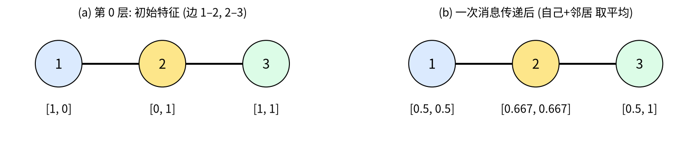
少样本 GNN：边也是学出来的。 在 CV-GNN、MSN、CvPGT 采用的 Garcia & Bruna 式少样本 GNN 中，边权不是事先给定，而是由节点特征差的绝对值经 MLP 学出：\(A_{ij} = \mathrm{MLP}(|\mathbf x_i - \mathbf x_j|)\)，再按行 softmax。每个节点的特征 = 图像嵌入 ⊕ 标签 one-hot；查询节点的标签部分初始化为均匀分布（“还不知道是哪类”）。经过几层消息传递，查询节点从“长得像的支持样本”那里获得标签信息。
GAT（图注意力网络）：边权由注意力机制计算，并可多头。对节点 \(i\) 的每个邻居 \(j\)，先算一个打分 \(e_{ij} = \mathrm{LeakyReLU}\big(\mathbf a^T[\mathbf W\mathbf h_i \,\|\, \mathbf W\mathbf h_j]\big)\)（\(\|\) 表示拼接，\(\mathbf a\) 为可学习向量），再在邻居上做 softmax 得到权重 \(\alpha_{ij}\)，最后 \(\mathbf h_i' = \sigma\big(\sum_j\alpha_{ij}\mathbf W\mathbf h_j\big)\)。它与 6.1 节的自注意力思路相同，只是“只在邻居之间”做注意力。REMI 发现全连接 GAT 有两个问题——过度平滑、所有支持样本贡献相同——于是提出只保留 top-k 邻居的掩码高斯 GAT（MG-GAT）。DCA-Net 用 GAT 在检测框之间传递信息。
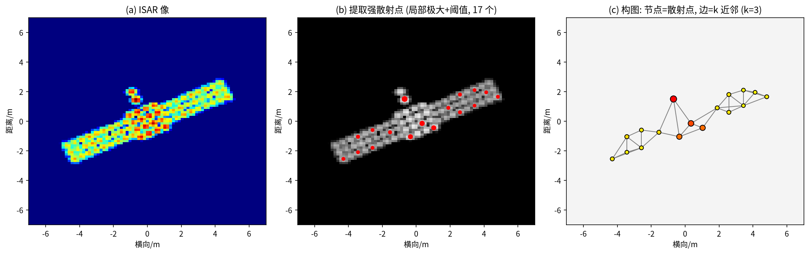
易错点
易错点：过度平滑。 消息传递本质上是“取平均”。层数太多时，所有节点的特征会越来越像（例题 6.2 中一层后三个节点已从 \([1,0],[0,1],[1,1]\) 变得彼此接近），最终无法区分。这就是 REMI 用“只保留最相似的几个邻居”来缓解的问题。
6.3 少样本学习（Few-Shot Learning）与元学习¶
直觉
类比：看一张照片认人。 朋友给你看一张他表弟的照片，第二天你在人群里就能认出他来。你并没有针对“表弟”训练过，而是平时见过成千上万张脸，学会了“怎样比较两张脸是否是同一个人”。少样本学习要让网络学会的，正是这种通用的比较能力，而不是死记某几个类别。
问题：每个新类别只有极少（1 或 5 张）带标签样本，怎么分类？
N-way K-shot 任务（episode）：随机抽 N 个类别，每类给 K 张带标签的支持集（support set），再给若干张待分类的查询集（query set）。例如 5-way 1-shot：5 个类各 1 张支持图，查询图要判断属于这 5 类中的哪一类，随机猜测的正确率为 20%。
关键设定：类别分为基类（base）与新类（novel），二者不相交。训练（元训练）时只在基类上反复抽取任务；测试时在从未见过的新类上抽取任务，报告上千个任务的平均精度与 95% 置信区间（REMI、MLFR 均为 1000 个任务）。“训练时也按测试时的形式做题”，这种思路叫元学习（learning to learn）。
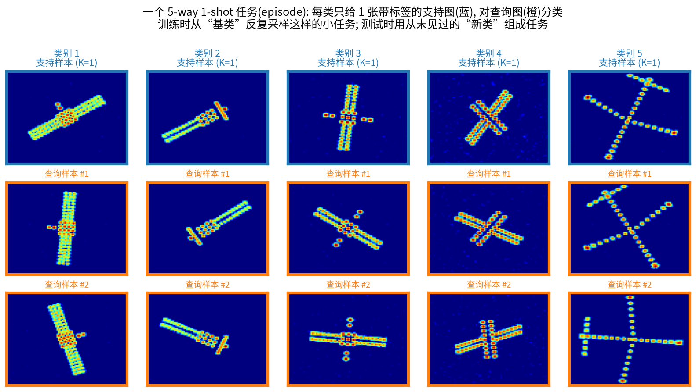
6.3.1 原型网络（ProtoNet）¶
机理。 用一个嵌入网络 \(f_\phi\)（通常是 4 层卷积 Conv4 或 ResNet）把每张图映射成向量。每类支持嵌入的均值就是这一类的原型：
查询 \(\mathbf q\) 属于第 \(n\) 类的概率，是对“负的距离平方”做 softmax：
关键公式
\(\mathbf c_n\)：第 \(n\) 类原型；\(\|\cdot\|^2\)：欧氏距离的平方。离哪个原型越近，属于哪类的概率越大。训练时用交叉熵（→ 第 5.2 节）更新 \(\phi\)。
例题
例题 6.3（3-way 1-shot 原型网络）。 1-shot 时原型就是那唯一一张支持图的嵌入：\(\mathbf c_1=[1,0]\)，\(\mathbf c_2=[0,1]\)，\(\mathbf c_3=[-1,-1]\)；查询嵌入 \(\mathbf q = [0.6, 0.3]\)。
第 1 步：距离平方。
第 2 步：softmax。 \(e^{-0.25}=0.7788\)，\(e^{-0.85}=0.4274\)，\(e^{-4.25}=0.0143\)，总和 \(1.2205\)，所以 \(\mathbf p = [0.638,\ 0.350,\ 0.0117]\)，判为第 1 类。
第 3 步：损失。 若真实类别确为第 1 类，交叉熵 \(L = -\ln 0.638 = 0.449\)；训练会让 \(\mathbf q\) 更靠近 \(\mathbf c_1\)。
5-shot 时：若第 1 类有 5 张支持图，嵌入分别为 \([1,0],[0.8,0.2],[1.2,-0.2],[0.9,0.1],[1.1,-0.1]\)，原型就是它们的平均 \([1,0]\)。样本越多，原型越不受个别“坏样本”（如自遮挡、强旁瓣）的影响。
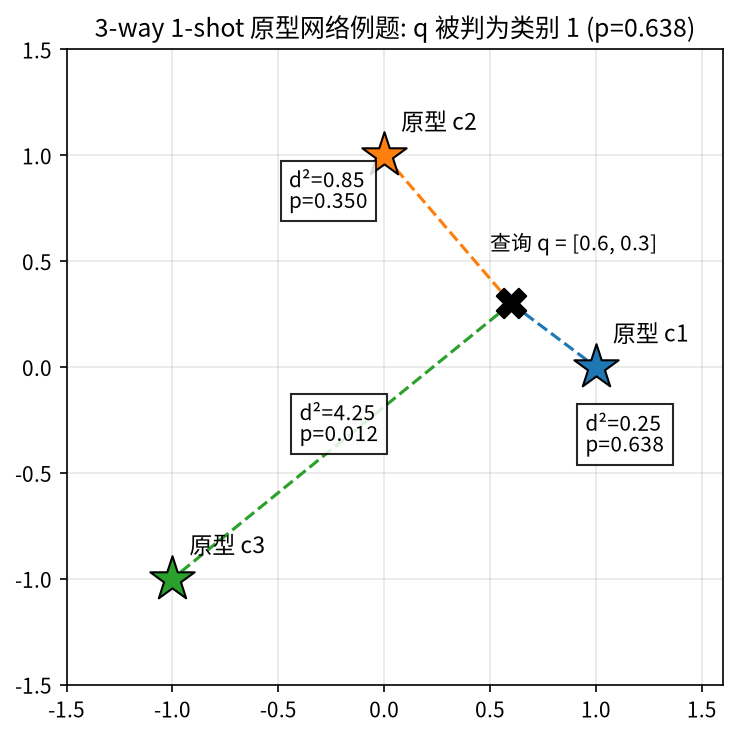
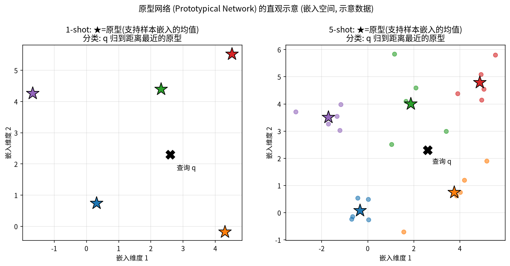
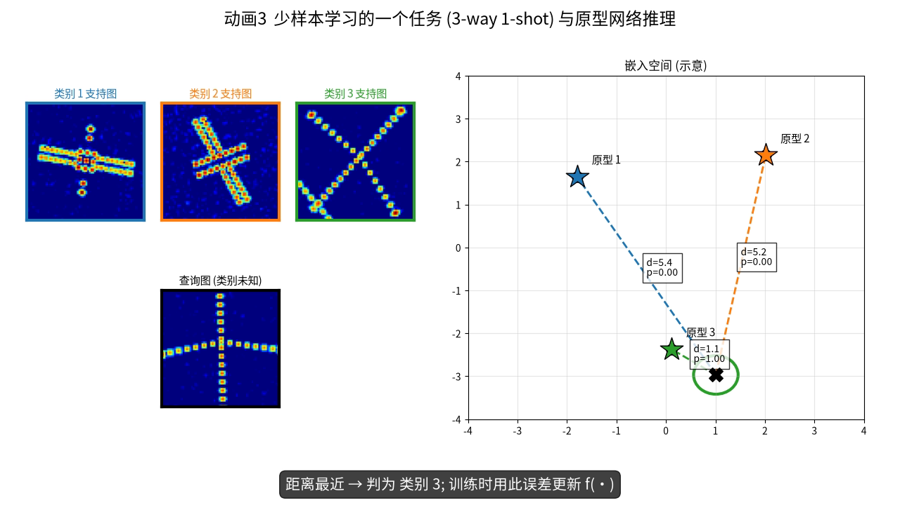
▶ 动画 3 少样本任务与原型网络推理（36 s）：抽类 → 支持图嵌入 → 原型 → 查询嵌入 → 距离与概率 → 判别，连续演示两个任务。文件：videos/V3_fewshot_episode.mp4
6.3.2 关系网络与 MAML¶
关系网络（RelationNet）：不再用固定的欧氏距离，而是用一个可学习的小网络 \(g\) 打“关系分数”：\(r_{n} = g\big([f_\phi(\mathbf q)\,\|\,\mathbf c_n]\big)\in[0,1]\)（拼接后经卷积/全连接，最后 sigmoid）。直觉：“怎么比较”本身也交给网络去学。
MAML（模型无关元学习）：学一个好的初始化 \(\boldsymbol\theta\)，使得在任何新任务上只需走几步梯度下降就能适应。每个任务分两层循环：
\(\alpha\)、\(\beta\) 分别为内、外循环学习率。类比：不是教学生某道题的答案，而是培养“看一眼例题就能举一反三”的底子。
代表性方法（7 篇论文中的对比方法几乎都在这里）：
| 方法 | 思想 | 论文中出现 |
|---|---|---|
| 原型网络 ProtoNet | 每类支持嵌入的均值为“原型”，查询按到原型的距离分类 | CV-GNN、MSN、REMI、MLFR |
| 匹配网络 Matching Net | 查询与每个支持样本做注意力加权 | MSN |
| 孪生网络 Siamese | 学“两张图是否同类” | MSN |
| 关系网络 RelationNet | 用一个可学习的网络 \(g(\cdot)\) 输出两样本的“关系分数” | MSN、CvPGT、REMI、MLFR（其推理模块即基于此） |
| GNN 少样本 | 样本当节点，消息传递标签（6.2 节） | CV-GNN、MSN、CvPGT |
| TPN | 转导式传播，利用查询集之间的关系 | REMI、MLFR |
| MGA-Net | 基于 GAT 的方法 | REMI、MLFR |
| MAML | 学一个好的初始化，使少量梯度步即可适应新任务 | MSN、CvPGT |
易错点
易错点。（1）“few-shot”指测试时每个新类只有 K 张标签样本，不是“整个训练集很小”；MSN 的“小样本”是后者（见第 4.3 节）。（2）基类与新类必须不相交，否则测得的精度只是“认识老朋友”的能力。（3）本书项目 2 实测：同一个 Conv4 原型网络，训练前 5-way 1-shot 精度为 42.08%，在基类上元训练后为 91.69%（新类，附录表 A-1），说明“比较能力”是可以学出来并迁移到新类的。
6.4 对比学习¶
直觉
类比：认双胞胎之外的“同一个人”。 给你同一个人在不同光照、不同角度下的两张照片，你要学会说“这是同一个人”；同时，对其他人的照片说“不是”。不需要知道这个人叫什么（不需要标签），只要知道“哪两张来自同一个人”。学会之后，对光照、角度的变化就“不敏感”了。
思想：不需要标签，让同一样本的两个“增强视图”在嵌入空间中靠近，不同样本互相推远。相似度常用余弦相似度 \(\mathrm{sim}(\mathbf u,\mathbf v) = \mathbf u^T\mathbf v/(\|\mathbf u\|\|\mathbf v\|)\in[-1,1]\)。SimCLR 的 NT-Xent 损失（一个 batch 有 \(N\) 个样本 → \(2N\) 个视图，每个正样本对有 \(2N-2\) 个负样本）：
符号说明：\(\mathbf z_i,\mathbf z_j\) 为同一样本两个视图的嵌入（正样本对）；分母对除 \(i\) 自身以外的所有视图求和（含正样本和负样本）；\(T\) 为温度，\(T\) 越小越“挑剔”。它其实就是一个“在所有候选里把正样本挑出来”的 softmax 交叉熵（→ 第 5.2 节）。
例题
例题 6.4（NT-Xent）。 温度 \(T=0.5\)；视图 \(i\) 与正样本的相似度为 0.9，与两个负样本分别为 0.1 和 \(-0.2\)：
若正样本相似度降到 0.5，\(e^{1.0}=2.718\)，损失升为 \(-\ln(2.718/4.610) = 0.528\)——损失会推动正样本对靠得更近。
CvPGT 把“增强”换成物理上有意义的成像参数随机化（积累角、转动加速度、旋转角），使编码器对分辨率、散焦、姿态不敏感（对应第 2.4、2.5 节的物理形变）；并把相似度换成复数版本（实部与虚部余弦相似度的乘积，原文式 (2)）。MLFR 的类间对比损失 \(L_{CR}\) 则是有监督对比学习（InfoNCE）：同类样本都算正样本。
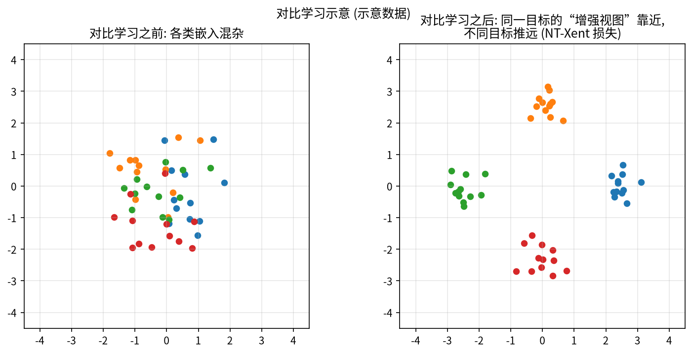
6.5 复值神经网络¶
直觉
为什么要“复数权重”？ 第 0.1 节说过：复数乘法 = 长度相乘、角度相加。复数权重因此天然能表达“把相位转一个角度、把幅度放大缩小”这种对 ISAR 很自然的操作。把实部、虚部拆成两个独立实数通道的实值网络，要靠学习才能“发现”这种耦合关系。
ISAR 像是复数 \(I = I_r + jI_i\)（→ 第 0.2 节）。实值网络要么只用幅度 \(|I|\)，要么把实部、虚部当两个独立通道。复值网络让权重也是复数 \(W = A + jB\)，卷积按复数乘法展开：
推导只用了 \(j^2 = -1\)：\(jB * jI_i = j^2(B*I_i) = -B*I_i\)，归入实部。
例题
例题 6.5（复数乘法与复激活）。 权重 \(w = 1+2j\)，输入 \(x = 3-j\)：
极坐标验证：\(|w| = 2.236\)，\(|x| = 3.162\)，\(|wx| = 7.071 = 2.236\times3.162\) ✓；\(\angle w = 63.4^\circ\)，\(\angle x = -18.4^\circ\)，\(\angle wx = 45^\circ = 63.4^\circ + (-18.4^\circ)\) ✓。
复激活 CReLU 对实部、虚部分别做 ReLU：\(\mathrm{CReLU}(-2+3j) = \max(0,-2) + j\max(0,3) = 0 + 3j\)。
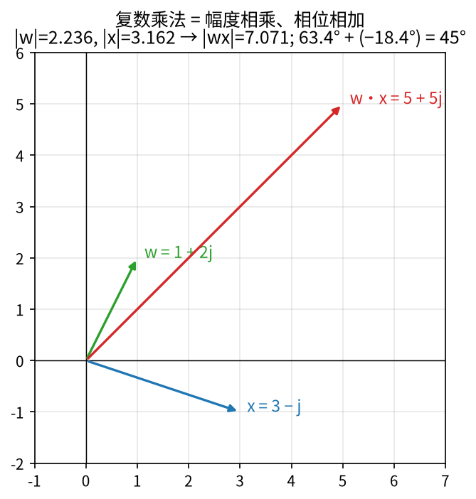
由式 (6.8)，一次复卷积相当于 4 次实卷积，所以 CV-GNN 指出 CV-GNN 的复杂度约为实值的 4 倍（单张 1.190 s vs RV-GNN 0.198 s）。配套组件：
- 复激活：如 CReLU（实部、虚部分别 ReLU），CV-GNN 的 CV-Softmax 为 \(\sigma(\mathrm{Re}) + j\,\sigma(\mathrm{Im})\)；
- 复批归一化 CV-BN：不是对实部、虚部分别归一化，而是把每个复数看成二维向量 \([\mathrm{Re},\mathrm{Im}]^T\)，用 2×2 协方差矩阵
做“白化”（CV-GNN 式 (8)–(13)、CvPGT 式 (7)–(8)）。\(C_{rr}\)、\(C_{ii}\) 为实部、虚部的方差，\(C_{ri}=C_{ir}\) 为二者的协方差。白化后实部和虚部不相关、方差都为 1——这是例题 5.7 一维 BN 的二维推广。
为什么相位重要？ 图 6-11 给出一个经典实验：在回波域把目标 A 的幅度和目标 C 的相位组合，成像结果“长得像 C”。相位携带了大量结构信息；散焦的信息也主要藏在相位里（CV-GNN 的核心论点：高阶项信息蕴含在实部与虚部的关系中）。
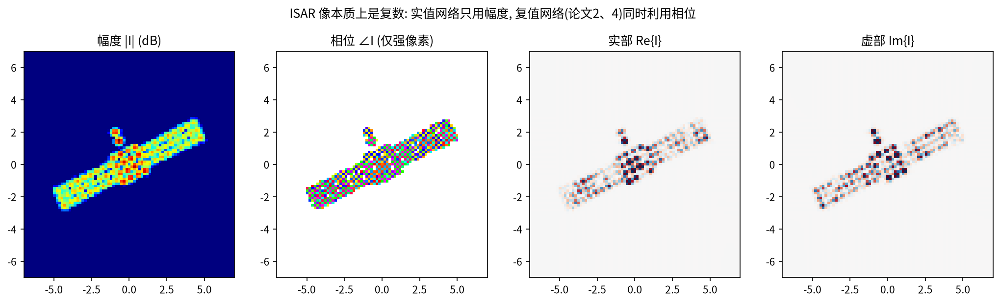
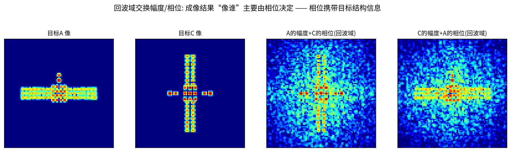
6.6 空间变换网络（STN）¶
直觉
类比：扫描文件前先把纸摆正。 拍一张歪斜的文件照片，扫描软件会先自动检测四个角、把它旋转拉正，再做文字识别。STN 就是网络内部的“自动摆正”模块：它自己判断图像该怎么转、怎么缩放、怎么平移，而且这个判断能力是和分类任务一起训练出来的。
STN 是一个“可微的图像校正器”，分三步：
- 定位网络：一个小 CNN 从输入图像预测仿射参数 \(\boldsymbol\theta\)（2×3 矩阵，6 个数）；
- 网格生成：对输出图上的每个像素坐标 \((x_t, y_t)\)，算出它应该到输入图的哪里“取像素”：
- 双线性采样：\((x_s, y_s)\) 一般不是整数，用周围 4 个像素加权插值。插值对坐标可导，所以整个过程能端到端训练。
坐标通常归一化到 \([-1,1]\)。左边 2×2 部分负责旋转/缩放/剪切，第三列 \((\theta_{13},\theta_{23})\) 负责平移。
例题
例题 6.6（STN 的坐标变换与插值）。 旋转 30° 并沿 \(x\) 平移 0.1：
输出点 \((x_t,y_t)=(0.5, 0)\)：\(x_s = 0.866\times0.5 - 0.5\times0 + 0.1 = 0.533\)，\(y_s = 0.5\times0.5 + 0.866\times0 + 0 = 0.25\)。即输出图在 \((0.5,0)\) 处的像素取自输入图的 \((0.533, 0.25)\)（图 6-13）。
双线性插值。 设要在像素坐标 \((1.3,\ 2.6)\) 处取值，周围 4 个像素为 \(I(1,2)=10\)，\(I(2,2)=20\)，\(I(1,3)=30\)，\(I(2,3)=40\)（\(I(x,y)\)）。小数部分 \(\Delta x = 0.3\)，\(\Delta y = 0.6\)，每个像素的权重是“对角那块矩形的面积”：
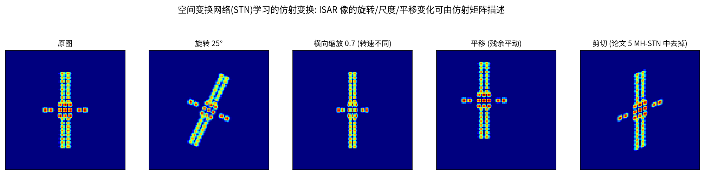
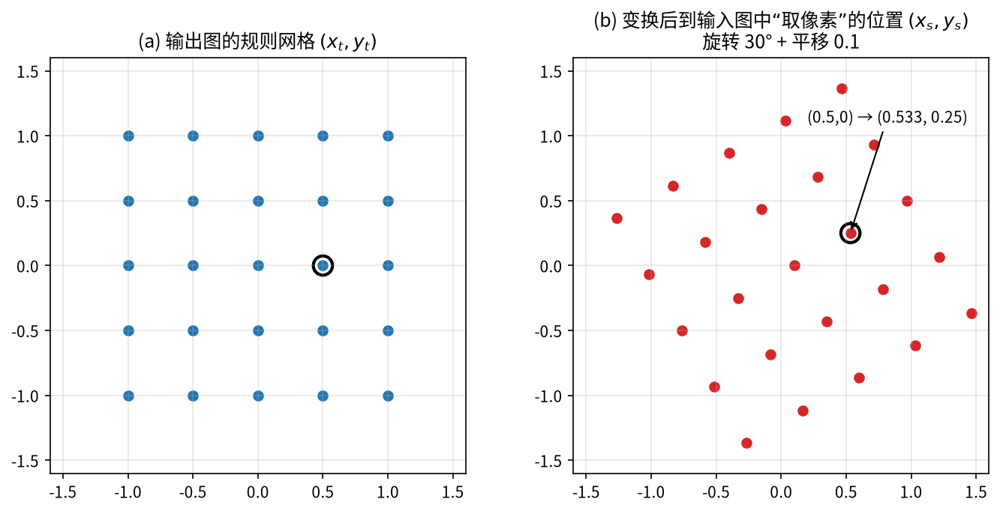
与 ISAR 的联系。 ISAR 中的形变（旋转、尺度、平移）恰好能用仿射变换描述：旋转来自视线/姿态变化，横向缩放来自未知转速与积累角（第 2.4 节），平移来自平动补偿残差（第 2.6 节）。但普通 STN 的 6 个参数还包含剪切，例如 \(\left[\begin{smallmatrix}1&0.4\\0&1\end{smallmatrix}\right]\)（即 \(x_s = x_t + 0.4y_t\)）会把矩形推成平行四边形，而 ISAR 物理上不产生剪切；参数无约束时还可能把目标“移出边界”。REMI 的 MH-STN 因此把参数约束为 5 个（2 平移 + 2 缩放 + 1 旋转，tanh 限幅），并用多个头输出多个校正结果、与原图拼接（详见第 11 章）。MLFR 的 AMFA 沿用了相同的参数化思路。
6.7 评价指标速查¶
| 指标 | 定义 | 出现 |
|---|---|---|
| OA（总体精度） | 分对的样本数 / 总数 | DB-SSIT、MSN |
| AA（平均精度） | 各类精度的平均 | DB-SSIT |
| Kappa 系数 | 扣除“随机猜对”后的一致性，1 为完美 | DB-SSIT、CV-GNN、MSN |
| 均值 ± 95% 置信区间 | 少样本中上千个任务精度的统计 | REMI、MLFR |
| Precision / Recall / F1 | 检测中的查准率、查全率及其调和平均 | DCA-Net |
| mAP50 | IoU ≥ 0.5 算检测正确时，各类 AP 的平均 | DCA-Net |
| FLOPs / Params | 计算量 / 参数量 | DB-SSIT、REMI、MLFR、DCA-Net |
例题
例题 6.7（OA、AA 与 Kappa）。 两类问题，测试集 A 类 90 张、B 类 10 张。某网络把 A 类全判对，B 类只判对 5 张。
- OA \(= (90+5)/100 = 95\%\)；AA \(= (100\% + 50\%)/2 = 75\%\)——AA 揭示了少数类表现差。
- Kappa：观测一致率 \(p_o = 0.95\)。网络预测为 A 的有 95 张、为 B 的有 5 张，随机一致率 \(p_e = 0.90\times0.95 + 0.10\times0.05 = 0.86\)。于是 \(\kappa = (p_o - p_e)/(1-p_e) = 0.09/0.14 = 0.643\)。
95% 置信区间：少样本测试 \(M\) 个任务、精度标准差为 \(s\) 时，区间半宽为 \(1.96\,s/\sqrt M\)。例如 \(M=1000\)、\(s=15\%\)，半宽为 \(0.93\%\)，报告为“\(xx.xx \pm 0.93\%\)”。
F1 与 IoU。 Precision \(= TP/(TP+FP)\)（报出来的有多少是对的），Recall \(= TP/(TP+FN)\)（真目标有多少被找到），F1 \(= 2PR/(P+R)\)。IoU 是预测框与真值框的“交集面积 / 并集面积”。
可视化工具：Grad-CAM（网络“看”哪里的热力图，DB-SSIT、MSN、CvPGT 使用）、t-SNE（把高维特征降到 2 维看聚类，DB-SSIT、MLFR 使用）、混淆矩阵（DB-SSIT、MSN、REMI、DCA-Net）。
小结
- 自注意力 = 查询与键打分 → 按行 softmax → 对值加权（例题 6.1）；Transformer 擅长全局关系，代价随 token 数平方增长。
- GNN = 消息传递：先聚合邻居、再变换（例题 6.2）；少样本 GNN 的边由 \(|\mathbf x_i-\mathbf x_j|\) 学出；GAT 用注意力算边权。
- 少样本学习的核心是 episode 训练 + 基类/新类不相交；ProtoNet 用“到原型的距离平方 + softmax”分类（例题 6.3：\(p=[0.638, 0.350, 0.012]\)）；RelationNet、GNN、MAML 是标准基线。
- 复值网络保留相位（复数乘法 = 旋转缩放）；对比学习获得不变性（NT-Xent 例题 0.272）；STN 校正几何形变（例题 6.6）。这三样分别对应 ISAR 的“复数本质”“成像参数多变”“几何形变”。
- CNN 擅长局部特征，Transformer 擅长全局关系，GNN 擅长“关系推理”；7 篇论文几乎都是这三者的组合。